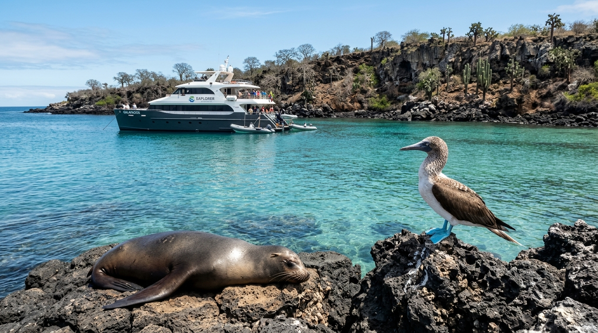
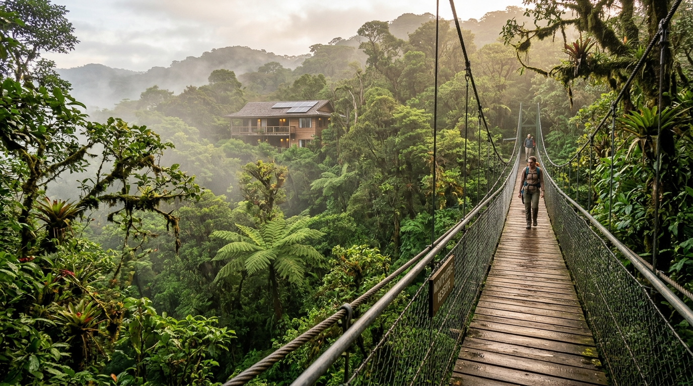
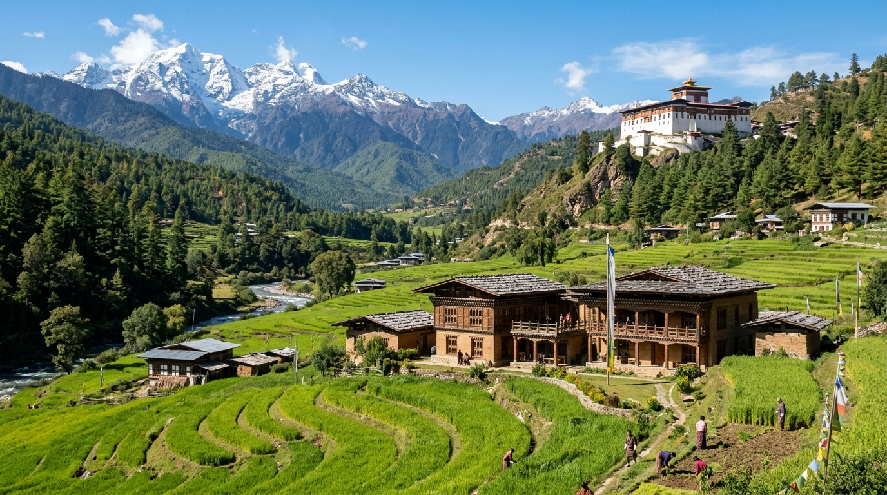
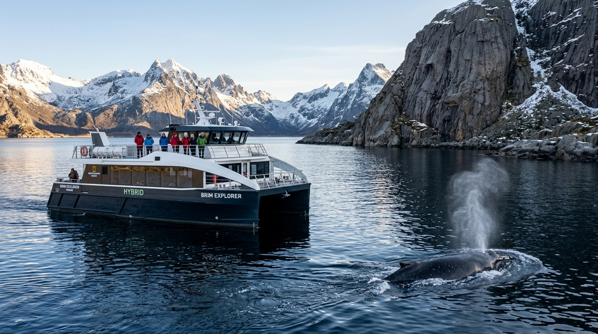

Authentic Conservation, Low-Impact Engineering, Mixed Conditionals & Spoken Exposés
1. Forensic Greenwashing Auditing: Distinguish authentic ecotourism from misleading PR claims across energy, revenue retention, and land tenure.
2. Past Choices & Present Outcomes: Formulate mixed conditionals (If + had + V3, would + V1) to evaluate past conservation decisions.
3. Setting Rules & Targets: Deploy formal connectors of purpose (so as to, in order that) and condition (provided that) accurately.
4. Small-Group Research Sprint: Analyze a fragile global destination case study (Galápagos, Costa Rica, Bhutan, Norway) in working pairs or triads.
5. 5-Minute Spoken Exposé: Deliver a collaborative briefing without reading notes, defending project authenticity against board questions.
6. Active Peer Observation: Score peer presentations on authenticity, spoken fluency, and grammar using a structured evaluation grid.
Communicative Warm-Up: Discuss the two industry prompts below with a partner. Connect current environmental headlines to clean transport and community ownership.
What concrete evidence proves an eco-lodge is genuinely sustainable rather than merely decorating bedrooms with bamboo furniture and towel re-use signs?
In many international resorts, over 80% of visitor expenditure leaks out to foreign hotel conglomerates. How can destinations ensure direct local revenue retention?
Test your memory with your partner. Provide a precise spoken B2 definition before checking the benchmark answers.
| Session 3 Core Concept | Operational Spoken Benchmark Definition | Self-Check |
|---|---|---|
| 1. Carrying Capacity | The maximum visitor threshold an ecosystem or urban centre can absorb without permanent environmental degradation or severe decline in local resident quality of life. | Recalled |
| 2. De-Marketing | Strategic communication and targeted pricing designed to discourage visitor volumes or redirect tourist flows away from fragile hotspots to quieter alternative regions. | Recalled |
| 3. Resident Backlash | Civil protests, political strikes, and grassroots resistance from local citizens when uncontrolled tourism causes rising rents, overcrowding, noise, and loss of neighbourhood identity. | Recalled |
| 4. Tourist Levy / Surcharge | A dedicated municipal surcharge added to hotel invoices or city entry gates, ring-fenced exclusively to fund public services, waste management, and conservation projects. | Recalled |
Forensic Audit Task: Examine the 3 international tourism projects below. Use the forensic audit criteria to separate verified environmental stewardship from superficial marketing buzzwords.
| Project Dossier | Marketing Claims vs. Reality | Energy & Infrastructure | Revenue Retention | Audit Verdict |
|---|---|---|---|---|
|
Project A: Monteverde Cloud Forest Costa Rica (Private Reserve) |
Protects 500 hectares of primary cloud forest. 90% of operational staff hired from neighbouring farming cooperatives. Strict trail quotas enforced daily. | 100% off-grid solar and micro-hydro generation. Elevated boardwalks eliminate trail erosion. | 78% of visitor expenditure retained directly within the local municipal district. | Verified Ecotourism High community co-ownership & GSTC certified. |
|
Project B: 'Eco-Luxury' Lagoon Resort Southeast Asia (Private Atoll) |
Promotes bamboo decor, paper drinking straws, and towel re-use cards. Claims to be '100% nature-friendly' on luxury travel blogs. | Constructed over cleared mangrove wetlands. Powered by 24/7 hidden diesel generator farms. | Only 12% retained; profits wired to offshore holding company; foreign managers. | Severe Greenwashing High ecological destruction & massive leakage. |
|
Project C: Maasai Conservancies Kenya (Community Trust) |
Land leased directly from indigenous Maasai landholders. Maximum cap of 16 guests per camp to prevent wildlife harassment during safaris. | Solar microgrid power, low-impact canvas structures, zero permanent concrete foundations. | 65% of net revenues fund local community health bursaries and anti-poaching teams. | Community-Based (CBT) True indigenous stewardship & conservation co-benefits. |
Record your group's arguments why Project B fails the ecotourism standard:
With your partner, formulate two arguments: Why does high local revenue retention (e.g. Costa Rica's 78%) create far stronger environmental protection than punitive government fines alone?
Communicative Grammar Mastery: Use mixed conditionals to link past conservation decisions with present environmental outcomes, and use formal connectors to define mandatory project targets.
If + Past Perfect (had + V3),
would + base verb (V1)
"If the government had protected the coral reef ten years ago, the local diving economy would be thriving today."
so as to / in order to + V1
in order that + Subject + modal
"The reserve installed solar rainwater pumps so as to minimize strain on the municipal aquifer."
provided that / on condition that
+ present tense clause
"Tourists may explore the fragile canyon provided that they remain on marked wooden walkways."
❌ Wrong: "If the authorities would have banned cruise ships, the lagoon would be clean."
❌ Wrong: "If the authorities had banned cruise ships, the lagoon would have been clean today." (Incorrect result tense for present state).
✅ Right: "If the authorities had banned cruise ships five years ago, the lagoon would be clean today." (Past cause → Present outcome).
Transform the prompt ideas into sophisticated B2 environmental statements:
Collaborative Task: In pairs or triads, select one destination case study below. Analyze the ecosystem profile, examine the low-impact solution, and extract the community metrics for your upcoming 5-minute exposé.

Ecosystem: Volcanic archipelago with 97% endemic species, delicate marine food webs, and zero natural predators.
Threat: Invasive alien species, mega-yacht anchoring damage, and historical overfishing of marine life.
Solution: Strict cap of 100 passengers per vessel, hybrid electric auxiliary drives, and mandatory certified naturalist guides.

Ecosystem: High-altitude tropical cloud forest harboring 50% of national biodiversity, resplendent quetzals, and jaguars.
Threat: Past deforestation for cattle ranching and climate-induced cloud ceiling elevation.
Solution: Suspension canopy walkways preventing soil erosion, 100% off-grid solar/hydro, and biological rewilding.

Ecosystem: Pristine Himalayan valleys, high-altitude alpine meadows, and sacred Buddhist monasteries.
Threat: Risk of backpacker overcrowding, plastic accumulation on mountain passes, and cultural dilution.
Solution: Mandatory $100/day Sustainable Development Fee (SDF) and constitutional carbon-negative protection.

Ecosystem: Glacial fjords, winter humpback/orca feeding grounds beneath northern lights, Arctic marine tundra.
Threat: Underwater engine noise disrupting cetacean echolocation, heavy fuel oil emissions, and cruise congestion.
Solution: Silent hybrid-electric catamarans powered by fjord hydro, zero-emission mode within 1000m of cetaceans.
1. Ecosystem Profile: What specific flora, fauna, or landscape is vulnerable to tourist disruption?
2. Engineering / Zoning Mechanism: What technical or regulatory solution prevents degradation?
3. Local Prosperity Metric: How much revenue remains local, and what public services does it fund?
4. Spoken Grammar Challenge: Deliver at least 1 mixed conditional and 1 connector without reading.
Delivery & Active Listening: Deliver your collaborative 5-minute spoken exposé to the class or exchange partners without reading word-for-word. While other teams present, complete the Peer Observer Checklist.
Introduce the destination, describe ecosystem vulnerabilities, and detail the past commercial threats that forced intervention.
Explain the engineering, renewable microgrid, or regulatory zoning model and explain how local residents capture tangible revenue.
Deliver the mixed conditional reflection (If authorities had not...), address greenwashing risks, and lead responses to board questions.
• "How do you prove that your destination does not rely on hidden diesel backup generators during peak tourist season?"
• "If visitor demand triples over the next decade, what carrying-capacity trigger will strictly halt further admissions?"
• "How does your project ensure local community members hold skilled management roles rather than low-wage service jobs?"
• "Could the premium price of your sustainable eco-destination result in social elitism, excluding ordinary travelers?"
| Presenting Team | 1. Environmental Authenticity | 2. Spoken Fluency (No Reading) | 3. Grammar: Mixed Conditional |
|---|---|---|---|
| Team: ______________ Case: Galápagos / Costa Rica |
GSTC criteria verified? Evidence of real community ownership vs. greenwashing? | Spoke naturally from keywords? Maintained eye contact? Shared speaking time? | Clear If + had + V3, would + V1 delivered? Accurate purpose connectors used? |
| Team: ______________ Case: Bhutan / Norway |
GSTC criteria verified? Evidence of real community ownership vs. greenwashing? | Spoke naturally from keywords? Maintained eye contact? Shared speaking time? | Clear If + had + V3, would + V1 delivered? Accurate purpose connectors used? |
Target Exam Competency: Master conditional clauses, connectors of condition and purpose, and professional environmental vocabulary frequently tested in international aviation and business TOEIC examinations.
1. Part 5: Incomplete Sentences
If the regional tourism board ________ strict visitor caps five years ago, the alpine hiking trails would not be suffering from severe soil erosion today.
2. Part 5: Connectors of Condition
International travelers are permitted to enter the private nature sanctuary ________ that they remain accompanied by a licensed local naturalist guide at all times.
3. Part 5: Prepositional Structures
All passengers must complete the mandatory biosecurity declaration ________ boarding the high-speed catamaran to the protected marine reserve.
4. Part 5: Purpose Clauses
The airport operator installed high-efficiency rainwater harvesting cisterns so ________ to reduce consumption from the stressed municipal municipal reservoir.
5. Part 6: Text Completion (Executive Briefing Extract)
"To prevent accusations of greenwashing, the airline entered into an agreement with a verified certifier. ________ the audit concluded that all carbon offset claims were supported by physical agro-forestry data, consumer trust rose by 24%."
6. Part 5: Vocabulary in Business Context
The municipal administration decided to ________ electric bus services to ensure that sustainable public transit remained affordable for rural residents.
1. (B) had implemented: Mixed conditional. The if-clause refers to past non-action (had + V3), leading to the present result (would not be suffering today).
2. (A) provided: 'Provided that' is a formal connector of condition meaning 'only on the condition that', followed by a subject and finite verb clause.
3. (A) prior to: 'Prior to' is a high-frequency formal compound preposition meaning 'before', taking the gerund 'boarding'.
4. (A) as: 'So as to + infinitive' expresses purpose. 'So that' requires a full clause with a subject and modal verb (so that it could reduce).
5. (A) Once: Temporal conjunction indicating that consumer trust increased immediately after the third-party audit reached a positive conclusion.
6. (A) subsidize: 'Subsidize' means to financially support an operation to keep user prices lower; distractor 'deplete' means to exhaust completely.
Core Lexical Reference: 18 high-frequency professional sustainability terms with IPA phonetic stress indicators, clear operational definitions, and sample spoken contexts.
01. Ecotourism /ˈiː.koʊˌtʊə.rɪ.zəm/
Responsible travel to natural areas conserving ecology and sustaining local welfare.
"Genuine ecotourism prioritizes ecosystem health over hotel expansion."
02. Greenwashing /ˈɡriːnˌwɒʃ.ɪŋ/
Misleading marketing that deceptively presents products or operations as eco-friendly.
"Replacing plastic straws with paper does not hide diesel emissions."
03. Biodiversity Corridor /ˌbaɪ.oʊ.daɪˈvɜː.sɪ.ti ˈkɒr.ɪ.dɔːr/
Protected natural belt connecting fragmented habitats to allow safe wildlife migration.
"The lodge reforested five hectares to establish a continuous corridor."
04. Community-Based Tourism (CBT) /kəˈmjuː.nə.ti beɪst/
Tourism owned, managed, and economically captured by local resident populations.
"Under the CBT model, safari lodge leases directly fund rural schools."
05. Carbon Offset /ˈkɑː.bən ˌɒf.set/
Compensating for emissions through certified investments in renewable power or forestry.
"Airlines must prioritize fleet decarbonization rather than simple offsets."
06. Rewilding /riːˈwaɪl.dɪŋ/
Restoring ecosystems to a natural state by reintroducing native species and apex predators.
"Rewilding projects allow natural river wetlands to absorb seasonal floods."
07. Conservation Levy /ˌkɒn.səˈveɪ.ʃən ˈlev.i/
A dedicated tax added to visitor entry, ring-fenced exclusively for park ranger patrols.
"Every international visitor pays a $100 conservation levy upon arrival."
08. Ecolabel Certification /ˈiː.koʊˌleɪ.bəl ˌsɜː.tɪ.fɪˈkeɪ.ʃən/
Formal third-party verification that an enterprise adheres to rigorous environmental audits.
"Independent certification guarantees the eco-lodge uses 100% solar power."
09. Low-Impact Architecture /loʊ ˈɪm.pækt ˈɑː.kɪ.tek.tʃər/
Building design using local timber, stone, and passive ventilation without soil harm.
"Elevated stilt chalets avoid disturbing vulnerable coastal mangrove roots."
10. Renewable Energy Microgrid /rɪˈnjuː.ə.bəl ˈmaɪ.kroʊ.ɡrɪd/
Self-sufficient decentralized energy network integrating solar, wind, and battery storage.
"The island operates entirely on a solar-battery microgrid without diesel."
11. Waste Valorization /weɪst ˌvæl.ər.aɪˈzeɪ.ʃən/
Transforming waste by-products into high-value clean energy, compost, or building tiles.
"Kitchen organic waste undergoes anaerobic digestion to generate biogas."
12. Indigenous Stewardship /ɪnˈdɪdʒ.ɪ.nəs ˈstjuː.əd.ʃɪp/
Recognizing and deferring to traditional native land tenure, governance, and ecology.
"Indigenous rangers utilize ancestral ecological knowledge to protect marine life."
13. Environmental Impact Assessment (EIA) /ɪnˌvaɪ.rənˈmen.təl ˈɪm.pækt/
A formal scientific study evaluating potential ecological damage before construction permits.
"The EIA demonstrated that a runway extension would disrupt wetland hydrology."
14. Sustainable Sourcing /səˈsteɪ.nə.bəl ˈsɔː.sɪŋ/
Procuring food, materials, and supplies exclusively from local certified ethical producers.
"The resort sources 100% of seasonal vegetables from neighbouring family farms."
15. Carrying Capacity Limit /ˈkær.i.ɪŋ kəˈpæs.ə.ti ˈlɪm.ɪt/
The absolute maximum visitor ceiling a geographic site can sustain without degradation.
"Authorities lowered the daily carrying capacity limit to protect granite trails."
16. Permaculture /ˈpɜː.məˌkʌl.tʃər/
Agricultural and land-use systems modelled on natural ecosystem resilience and diversity.
"Permaculture gardens supply fresh organic herbs while regenerating topsoil."
17. Dark Sky Reserve /dɑːk skaɪ rɪˈzɜːv/
Protected area with strict lighting ordinances to eliminate urban light pollution.
"Dark sky reserves attract astro-tourists while preserving nocturnal wildlife."
18. Regenerative Tourism /rɪˈdʒen.ər.ə.tɪv ˈtʊə.rɪ.zəm/
Travel that actively leaves a destination in a healthier ecological state than before.
"Regenerative tourism invites visitors to participate in coral reef replanting."
Confirm all 4 preparation checkpoints with your presentation partner before next week's evaluated oral tutorials:
☑️ 1. Partner & Topic Confirmed: Confirmed partner and chosen Option A (Eco-Friendly Itinerary) or Option B (City Tourism Comparison).
☑️ 2. Slides Prepared: 4 to 6 clean visual slides without dense paragraphs of text (strict no-reading rule enforced!).
☑️ 3. Study Logs Complete: Vocabulary Study Log and TOEIC Error Tracker updated and ready for teacher inspection.
☑️ 4. Spoken Self-Critique: 2 personal spoken strengths and 2 concrete targets for Semester 2 ready to articulate.